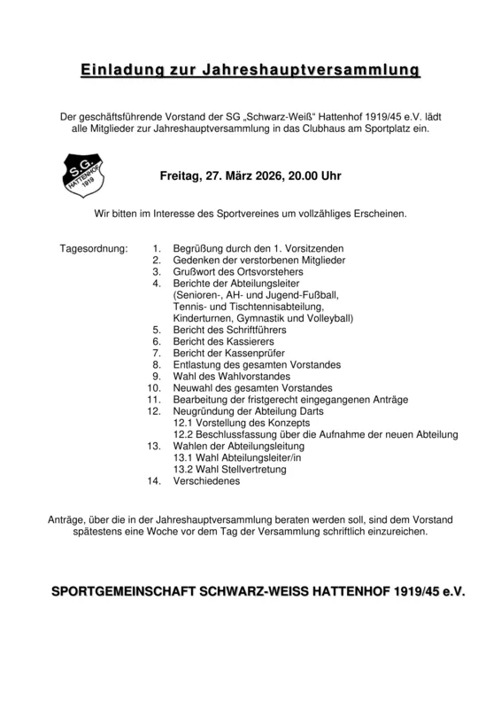
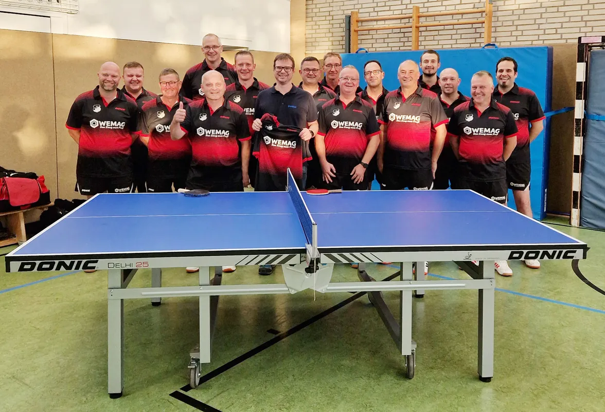

NEUES AUS DEM VEREIN
Aktuelles
Meldungen, Einladungen und Berichte aus den Abteilungen.
SG SCHWARZ-WEISS HATTENHOF 1919/45 e.V.
ARCHIV & AKTUELLES
Neuigkeiten der SG Hattenhof
Neuigkeiten und Archivbeiträge der SG Hattenhof.

Tennis: Jugendtraining startet nach den Ferien
Ab September bietet die Tennisabteilung wieder wöchentliches Training für Kinder und Jugendliche an. Anmeldungen sind ab sofort über die Abteilungsleitung möglich.
Tischtennis: Drei Herrenmannschaften gemeldet
Für die Spielzeit 2026/27 gehen drei Herrenmannschaften der SG Hattenhof an den Start. Gastspieler sind beim Training mittwochs ab 19 Uhr herzlich willkommen.
Damengymnastik: Neues Pilates-Angebot
Ab Herbst erweitert die Damengymnastik ihr Programm um einen wöchentlichen Pilates-Kurs. Vorkenntnisse sind nicht erforderlich – einfach vorbeikommen und mitmachen.
Kinderturnen: Schnuppertage im September
Zum Start des neuen Turnjahres veranstaltet die Kinderturnabteilung offene Schnuppertage. Eltern und Kinder können das Angebot unverbindlich kennenlernen.Volleyball: Trainingszeiten für die Hallensaison
Die Volleyballabteilung hat die Trainingszeiten für die kommende Hallensaison festgelegt. Neu: Ein zusätzlicher Termin für Freizeitspieler am Freitagabend.
Einladung zur Jahreshauptversammlung 2026
Der Vorstand der SG Hattenhof lädt alle Mitglieder herzlich zur ordentlichen Jahreshauptversammlung ein. Die Einladung mit Tagesordnung und weiteren Informationen ist im folgenden Dokument hinterlegt.

Neue Trikots für die Tischtennisabteilung
Die SG Hattenhof ist stolz auf ihre beiden Mannschaften mit insgesamt 15 aktiven Spielern in der Tischtennisabteilung. Diese können seit letzter Saison auf vier neuen Tischtennisplatten trainieren und ihre Spiele absolvieren. Die Tischtennisabteilung rangiert aktuell in der noch jungen Saison mit beiden Mannschaften ohne Punktverluste an den jeweiligen Tabellenspitzen der Bezirksklasse Fulda Gruppe 4 und zweiten Kreisklasse Fulda Süd.
Angespornt zu hervorragenden Leistungen werden die Spieler durch das neue Outfit, bestehend aus Trikot, kurzen Trainingshosen sowie Kapuzenjacken und T-Shirts, des Sponsors WEMAG GmbH & Co. KG aus Fulda.
Der Verein bedankt sich für die Unterstützung, was in heutigen Zeiten nicht selbstverständlich ist.
Das Tischtennistraining findet Mittwochs ab 19.00 Uhr in der Turnhalle der Grundschule Hattenhof statt. Jeder ist gerne als Gastspieler im Training gesehen – auch Nachwuchstalente sind herzlich willkommen.
BLEIB INFORMIERT
Neuigkeiten aus Hattenhof
Du möchtest keine Meldung aus den Abteilungen verpassen? Schau regelmäßig auf der Startseite vorbei oder sprich die Abteilungsleitung direkt an.
Zur Startseite →